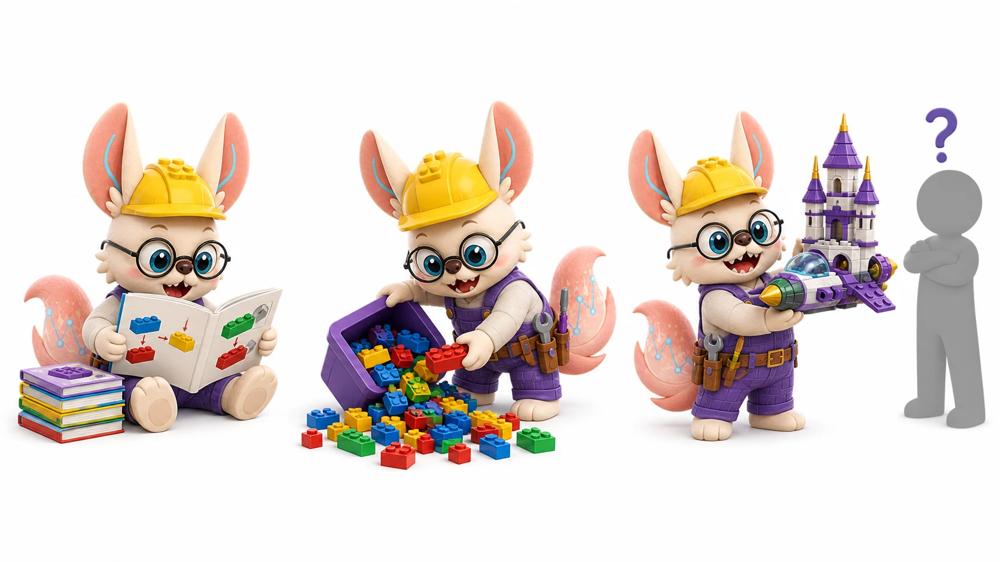
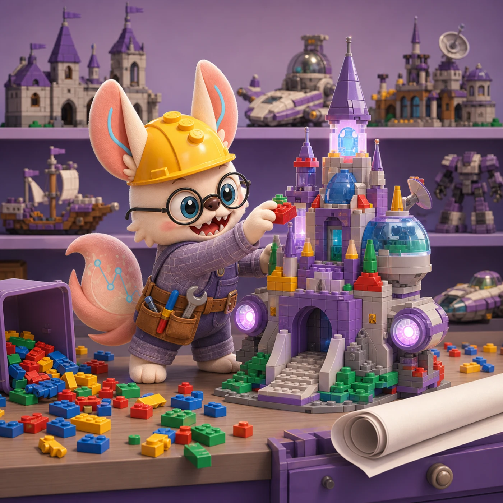
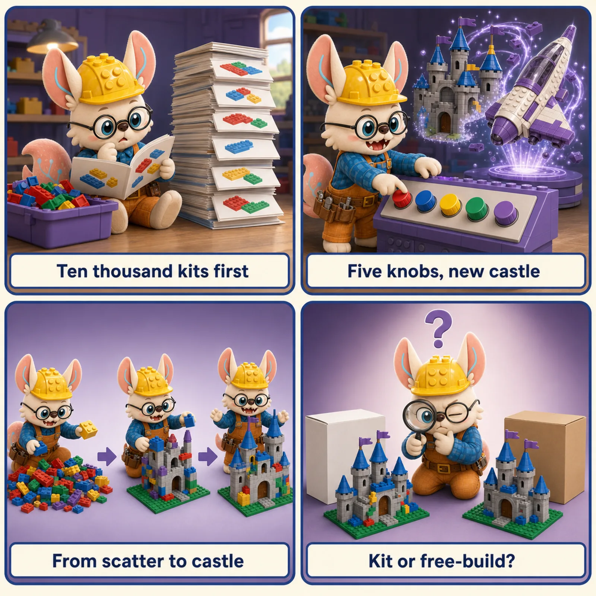

VAE, conditional VAE, diffusion, flow matching, GNN, and GAN architectures —
how biology generates new cells, designs proteins, predicts perturbations, and
infers regulatory networks.
6
Core Architectures
22+
Biology Models
5
Biological Tasks
2013–2026
Year Range

LEGO lens · generative models
看够一万座，自己也拼得出。
A classifier names the build in front of it. A generative model has studied ten thousand builds so deeply that it can free-build a new one in the same style. 生成模型不做点名，做自由拼搭：学到风格，拼出新品——新细胞、新蛋白、新化合物。

🧱 Free-Build Day: Generative Models in Six Scenes
「看够一万座，自己也拼得出。」
Every master builder started by studying kits; at some point the style lives in your hands and you can build something no instruction booklet ever contained. That is a generative model. Six scenes from free-build day, re-read as the architectures on this page.
Scene 1 · 看一万座城堡
Learning the distribution
Before free-build day, you spend a season building every kit in the catalog — until you know what makes a castle a castle: the proportions, the arches, the way towers balance.
The data distribution. Generative models learn the style rules behind every sample in the training set, not a label for one sample. See the paradigm ↓
Scene 2 · 自由拼搭日
Sampling
Today the instructions stay in the drawer. You reach into the bin and a castle rises that matches no kit — yet every master nods: that is castle style, unmistakably.
Generation. Sample from the learned distribution: new cells, new proteins, new compounds — novel but in-distribution. See why biology needs this ↓
Scene 3 · 图纸的隐藏规律
Latent space (VAE)
Comparing a hundred blueprints, you notice every castle is really just five knobs — height, span, towers, moat, crenellation style. Turn a knob, and a new but plausible castle appears.
VAE. A smooth latent space of style variables: interpolate between two cells, or condition a knob (batch, perturbation) to steer the build. See VAE ↓
Scene 4 · 从散砖堆收拢成形
Diffusion
Start with the bin tipped out — a meaningless pile. Then step by step: find the two bricks that belong, then the next pair, until a castle stands where noise was. Nobody does it in one move; everyone can in a hundred small ones.
Diffusion. Generation as iterative denoising: learn to reverse a noise-adding process, then build from pure noise in small confident steps. See diffusion ↓
Scene 5 · 骗过老师傅
GAN
Two apprentices compete: one free-builds fakes, the other spots them. Every rejection makes the forger better — until the appraiser honestly cannot tell the free-build from the kit original.
GAN. Generator vs discriminator in adversarial training. Largely superseded by diffusion today, but the contest taught the field what "indistinguishable" costs. See GAN ↓
Scene 6 · 拼一只从未存在的蛋白
Biological generation
The commission is not a castle at all: build a binder for this target, a cell after this drug, a network after this knockout. The style rules you learned become a design tool.
Generative biology. Conditional generation for perturbation response, protein design, and regulatory networks — the architectures below, pointed at real commissions. See the models ↓

Free-build day in four plays. Ten thousand kits first (learn the distribution) · five knobs, new castle (the latent space) · from scatter to castle (iterative denoising) · kit or free-build? (adversarial indistinguishability).
「风格学到手，新品自然来。」 — learn the style, and the new builds follow.
The Generative Paradigm
From discriminative to generative: why biology needs to generate, not just classify
A classifier tells you what a cell is. A generative model tells you what a cell
could look like under a new condition, a new perturbation, or a new combination of genes.
This distinction matters enormously in biology: drug discovery is not "classify existing
compounds" — it's "generate new compounds with desired properties"; perturbation biology
is not "classify the perturbed cell" — it's "predict the full expression profile of a cell
you've never measured."
The six architectures on this page each answer the generative question differently.
VAEs learn a smooth latent space you can interpolate or condition on.
Diffusion models learn to reverse a noise-adding process.
Flow matching learns the most efficient path between two distributions.
GNNs generate or score outputs over graphs — networks of genes, cells, or atoms.
GANs (now largely superseded) learn through adversarial competition.
Knowing which one to reach for — and why — is the goal of this page.
🧪 VAE
Smooth latent space. Best for: batch correction, cell generation, perturbation via latent arithmetic.
❅ Diffusion
High sample quality. Best for: protein structure design, high-fidelity cell generation.
➡ Flow Matching
Fast + OT-optimal. Best for: trajectory modeling, perturbation, distribution alignment.
🕸 GNN
Graph structure. Best for: regulatory networks, combinatorial perturbation, molecule design.
Visual Guide to Generative Architectures
1
Variational Autoencoder (VAE)
Encoder maps to a distribution; decoder samples and reconstructs
The VAE consists of an encoder q(z|x) that maps an input (e.g., a cell's gene
expression vector) to a distribution (Gaussian with mean μ and variance σ²) over a
latent space, and a decoder p(x|z) that reconstructs the input from a sample z
drawn from that distribution. Training maximizes the ELBO — reconstruction quality minus a KL
divergence penalty that keeps the latent space smooth and close to a standard Gaussian.
The smooth latent space enables powerful operations: interpolate between two cells,
add a "perturbation direction" vector, or sample new cells by decoding from z ~ N(0,I).
LEGO analogy: A VAE is a compression + factory system. The encoder
is an expert who compresses any LEGO build into a 10-digit code (the latent vector z), with the
rule that similar builds get similar codes (smooth latent space). The factory (decoder) can
reconstruct any build from just its 10-digit code. Once you have this system, you can design
new builds by picking a code between two existing ones (interpolation) — the factory produces
something that blends their properties.
Variant
Key change
Biology models
Best for
Standard VAE
Baseline ELBO objective
scVI (Lopez 2018)
Batch correction, dimensionality reduction
β-VAE
β > 1 upweights KL; more disentangled latent
Research tools
Interpretable latent factors (cell cycle, stress)
NVAE / Hierarchical VAE
Multiple latent layers; top-down inference
scVI-based extensions
Higher-fidelity generation with complex data
VQ-VAE
Discrete codebook instead of continuous z
Some single-cell research
Discrete cell state representation; tokenization
2
Conditional VAE (cVAE)
Condition label injected into both encoder and decoder — generate under any condition
A conditional VAE extends the standard VAE by injecting a condition label c
(cell type, perturbation, batch ID, donor) into both the encoder and the decoder.
The encoder learns q(z|x,c) — "given this cell and this condition, where is it in latent space?"
The decoder learns p(x|z,c) — "given this latent code and this condition, reconstruct the cell."
This separation is the key insight behind CPA and scGen:
the latent code z captures "what this cell is" independently of condition,
while c is "how condition transforms the output." This enables in silico
perturbation: encode a control cell, then decode with the perturbation condition.
LEGO analogy: The same factory as a standard VAE, but now the factory
takes a color chip as input. Give it the same 10-digit code with a red chip and
you get a red castle; with a blue chip you get a blue castle. The structure (z) and the
style (c) are separated — the factory can produce any style from any code.
Sparse additive mechanism; identifies which genes each perturbation acts on
Slow training; sensitive to hyperparameters
scVI + covariates
Batch / donor
Latent factorization of biological vs technical variation
Linear condition assumption
3
Diffusion Models
Learn to reverse a noise-adding process — sample by iterative denoising
Diffusion models define a fixed forward process that gradually adds Gaussian
noise to data over T steps until the data becomes pure noise (x_T ~ N(0,I)). A neural network
is then trained to reverse this process: given a noisy version x_t at timestep t, predict the
noise that was added. At generation time, start from pure noise and iteratively denoise using
the trained network. The key insight is that learning to denoise is much easier than learning
to generate directly — the model only needs to "clean up" a little at each step.
LEGO analogy: Imagine a perfect LEGO build that you photograph at each stage
as you randomly knock pieces off (forward process). You end up with a pile of random bricks
(pure noise). A diffusion model learns, from these photos, how to reassemble the build
one step at a time — put back a few bricks that clearly belong together, then a few more,
until the build is complete. It never has to figure out the whole build at once.
Variant
Key improvement
Biology models
Biology task
DDPM (Ho 2020)
Baseline; T=1000 steps
Reference implementation
Image generation (adapted for molecule/structure)
DDIM (Song 2021)
Deterministic reverse; 10–50 steps
Most fast samplers
Fast protein structure sampling
Score-based SDE (Song 2021)
Continuous-time formulation
RFdiffusion, Chroma
Protein backbone design
Classifier-free guidance
Condition by mixing conditional/unconditional score
Chroma, FrameDiff
Conditioned protein design (motif scaffolding)
Latent diffusion (LDM)
Diffuse in VAE latent space, not data space
scDiffusion, some cell gen.
High-resolution scRNA generation
4
Flow Matching & OT-CFM
Learn a vector field that transports one distribution to another — straight paths via OT
Flow matching learns a vector field v_θ(x, t) that transports samples from a
source distribution p_0 (e.g., Gaussian noise, or control cell states) to a target distribution
p_1 (e.g., real cell states, or perturbed states). At generation time, you start at p_0 and
integrate the ODE dx/dt = v_θ(x_t, t) from t=0 to t=1. The key advantage over diffusion:
OT-CFM (Optimal Transport Conditional Flow Matching) uses the Kantorovich
optimal transport coupling to define straight-line paths between source and target —
fewer integration steps, faster sampling, and geometrically meaningful trajectories.
LEGO analogy: You have two piles of LEGO bricks — pile A (source) and pile B
(target). A diffusion model drives all bricks to a random heap then reconstructs B. Flow
matching instead finds the most efficient direct path to move each brick in pile A
to its matched counterpart in pile B — the optimal assignment problem. OT-CFM solves this
assignment first (using optimal transport), then learns the straight-line movement plan.
Variant
Key property
Biology models
Biological use case
Conditional FM (Lipman 2022)
Condition on individual data pairs; easily scalable
CellOT, GENOT
Cell-to-cell transport; drug response prediction
OT-CFM (Tong 2023)
Adds OT coupling; straighter paths; fewer NFE
CellOT (OT variant), PRESCIENT
Trajectory prediction, single-cell time series
Rectified Flow (Liu 2022)
Reflow to further straighten trajectories
Research tools
One-step generation after reflow distillation
FrameDiff (Yim 2023)
Flow matching on SE(3) protein frames
FrameDiff (ICML 2023)
Protein backbone generation in 3D
5
Graph Neural Networks (GNN)
Message passing over biological graphs — genes, cells, atoms, or regulatory networks
GNNs operate on graph-structured data by iterative message passing:
each node sends information along its edges to neighbors, aggregates incoming messages, and
updates its embedding. After k rounds, each node's embedding encodes information from its
k-hop neighborhood. In biology, the graph structure is often the most important inductive bias:
a gene regulatory network encodes "which transcription factor controls which gene" — information
that a vanilla transformer would have to learn from scratch.
GEARS uses this to predict combinatorial perturbation responses by propagating
information about the perturbation through the regulatory graph.
LEGO analogy: LEGO Technic, where bricks have mechanical joints — the topology
of connections matters as much as the bricks themselves. A GNN is a builder who looks at each brick
not in isolation, but always in terms of its connected neighbors. Knock out one gear (perturb one gene)
and the vibration propagates to all connected bricks — the GNN predicts exactly how far the effect
travels through the mechanism.
GNN type
Aggregation
Biology models
Best for
GCN
Mean of neighbor features
Basic graph analyses
Simple regulatory network encoding
GAT
Attention-weighted neighbor aggregation
Many bio GNNs
Heterogeneous edge weights; protein interaction networks
Generator vs. Discriminator — largely superseded in biology by diffusion and flow matching
A GAN consists of a Generator G (maps random noise to fake samples) and a
Discriminator D (classifies real vs. fake). They are trained adversarially:
G tries to fool D; D tries to catch G. In biology, GANs were historically used for single-cell
data generation (scGAN) and GRN simulation (GRouNdGAN). However, they are now largely superseded
by diffusion and flow matching for most biological generation tasks due to notorious training
instability (mode collapse, oscillating loss) and the difficulty of conditioning. GAN knowledge
is still useful for understanding the literature and for niche applications.
LEGO analogy: A forger (Generator) trying to fool an expert authenticator (Discriminator).
Each becomes better as the game progresses. The problem: if the forger gets too good, the authenticator
gives up and stops providing useful feedback — this is mode collapse. Diffusion and flow matching
avoid the adversarial game entirely, which is why they tend to be more stable.
Variant
Key fix
Biology models
Status
WGAN / WGAN-GP
Wasserstein distance + gradient penalty → more stable
scGAN
Mostly replaced by diffusion
cGAN
Condition label injected to both G and D
Cell type-specific generation tools
Limited use; cVAE now preferred
GRouNdGAN
GAN + GRN causal constraints; causal controller
GRouNdGAN (2024)
Active; unique niche (GRN-constrained generation)
Key Papers by Architecture
VAE & Conditional VAE
scVI: Deep Generative Modeling for Single-Cell Transcriptomics
Lopez et al. | Nature Methods 2018
VAE
Negative binomial VAE for scRNA-seq that jointly models gene expression and captures batch effects in a structured latent space. Foundation for the scvi-tools ecosystem.
scGen: Predicting Single-Cell Perturbation Responses for Unseen Conditions
Lotfollahi et al. | Nature Methods 2019
VAE
Demonstrates that perturbation direction can be encoded as a vector in a VAE latent space, enabling zero-shot prediction of unseen perturbations by latent arithmetic: z_perturbed ≈ z_control + Δz.
CPA: Predicting Cellular Responses with Combinatorial Perturbations
Lotfollahi et al. | Nature Methods 2023
cVAE
Compositional Perturbation Autoencoder disentangles drug, dose, and cell-type embeddings additively in a cVAE framework, enabling combinatorial drug response prediction.
Introduces sparse additive mechanisms in the latent space — each perturbation activates a sparse subset of latent dimensions, enabling mechanistic interpretability of which genes each perturbation acts on.
Broadly Applicable and Accurate Protein Design with RFdiffusion
Watson et al. | Nature 2023
Diffusion (protein)
Fine-tunes RoseTTAFold as a diffusion model on protein backbone coordinates. Generates diverse, experimentally validated de novo protein structures including binders, symmetric assemblies, and enzyme active sites.
Illuminating Protein Space with a Programmable Generative Model (Chroma)
Ingraham et al. | Nature 2023
Diffusion (protein)
Score-based diffusion model with classifier-free guidance for programmable protein design — generates sequences and structures conditioned on natural language, symmetry, shape, or binding partner constraints.
scDiffusion: Conditional Generation of High-Quality Single-Cell Data
Luo et al. | Bioinformatics 2024
Latent Diffusion (scRNA)
Applies latent diffusion to scRNA-seq: a VAE encodes cells into a latent space where a diffusion model generates new samples. Conditioned on cell type or disease state for controlled scRNA data augmentation.
Modeling Single-Cell Dynamics with Optimal Transport Flow Matching (CellOT)
Bunne et al. | Nature Methods 2023
Flow Matching (OT)
Uses OT-based flow matching to learn transport maps between cell distributions — predicts how a population of cells changes under a drug or perturbation, preserving biological structure via the OT coupling.
FrameDiff: SE(3)-Equivariant Diffusion via Flow Matching for Protein Design
Yim et al. | ICML 2023
Flow Matching (SE3)
Applies conditional flow matching on SE(3) protein backbone frames, enabling rapid sampling of diverse protein structures. Simpler to train than diffusion-based protein design with competitive quality.
GENOT: Generalized Optimal Transport for Single-Cell Perturbation Modeling
Bunne et al. | NeurIPS 2023
Flow (GENOT)
Extends CellOT to the generalized (unbalanced) OT regime — handles perturbations that change cell population sizes or involve cell death. Applicable to CRISPR screens and drug cytotoxicity prediction.
GEARS: Predicting Transcriptional Outcomes of Novel Multigene Perturbations
Roohani et al. | Nature Biotechnology 2024
Graph Transformer
Combines a gene knowledge graph (co-expression, GO, regulatory links) with a Graph Transformer to predict gene expression responses to unseen combinatorial CRISPR perturbations, including two- and three-gene knockouts.
GRouNdGAN: GRN-Guided Simulation of Single-Cell RNA-seq Data
Zinati et al. | Nature Communications 2024
GNNGAN
Combines a GAN generator with a GRN-derived causal controller — a GNN that enforces biologically plausible regulatory constraints during cell generation. Unique in combining adversarial training with graph-based biological priors.
CellOracle: Dissecting Cell Identity via Network Inference and In Silico Gene Perturbation
Kamimoto et al. | Nature 2023
GNN (regulatory)
Infers cell-type-specific gene regulatory networks from scATAC-seq and scRNA-seq, then uses these GRN graphs to simulate transcription factor perturbations via graph-based signal propagation.
Do you have known graph structure (regulatory network, molecular graph)?
Yes → GNN (GEARS, CellOracle). The topology is your strongest inductive bias — use it. If you also need generation, combine GNN with a VAE or diffusion decoder (GRouNdGAN pattern).
2
Is the task perturbation prediction with a discrete condition label?
Yes → cVAE (CPA for combinatorial drugs; scGen for single perturbations; SAMS-VAE for mechanistic interpretability). These are the most mature tools with the best tooling (scvi-tools).
3
Do you need to model a continuous trajectory between two cell populations?
Yes → Flow Matching / OT-CFM (CellOT, GENOT). The OT coupling gives you the most biologically meaningful transport plan — not just "cell A becomes cell B" but "which specific cell A is most likely to become which specific cell B."
4
Is the task protein or molecular structure design?
Yes → Diffusion (RFdiffusion for backbone, Chroma for full protein) or Flow Matching (FrameDiff, ESM3-based sampling). Diffusion gives the highest quality; flow matching is faster to sample from. For small molecules, try diffusion (DiffSBDD, TargetDiff).
5
Do you need an interpretable latent space for downstream analysis?
Yes → VAE (scVI for batch correction; β-VAE for disentanglement). Diffusion and flow matching do not expose a structured latent space by default. The VAE z-vector can be clustered, regressed, or used as input to downstream classifiers.
Hands-On Resources
scvi-tools (VAE ecosystem)
scVI, scANVI, CPA, SAMS-VAE and 20+ models in one package. Start with the scVI tutorial for batch correction and cell generation.